Полиграфия окружает нас повсюду, но мы редко задумываемся о том, сколько удивительных историй и фактов связано с печатным делом. Давайте заглянем за кулисы типографского мира и узнаем несколько занимательных подробностей.
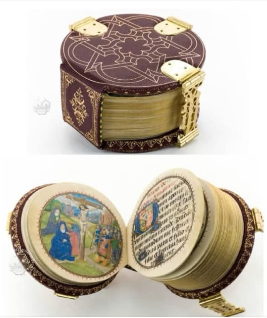
Знаете ли вы, что первые игральные карты появились в Европе еще в XIV веке? Их производство было настоящим искусством: карты изготавливались из трех слоев бумаги, а для придания гладкости их намыливали и полировали еще горячими. В XVIII веке одна мастерская могла производить до 60 тысяч колод в год!
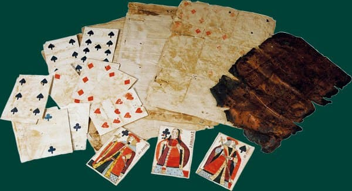
Книгопечатание тоже хранит свои секреты. Например, существуют книги размером с почтовую марку и настоящие гиганты весом в несколько десятков килограммов. А в XIX веке в России выпускались специальные атласные карты, которые не боялись влаги и отлично скользили при тасовании благодаря обработке тальком.
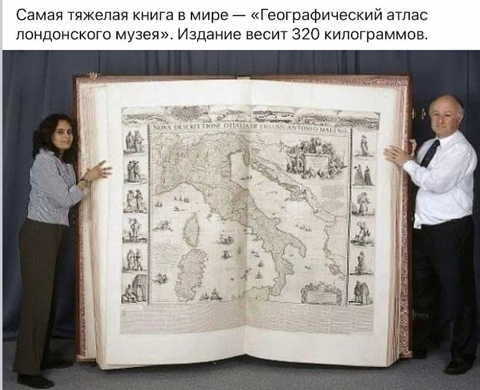
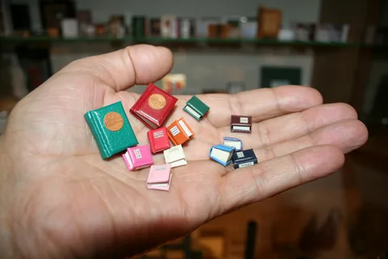
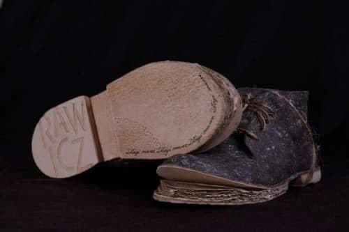
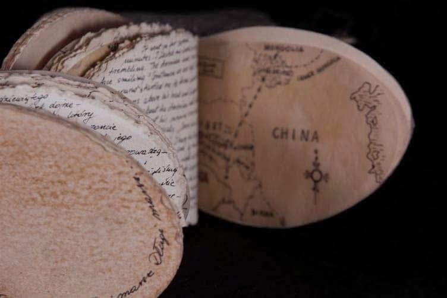
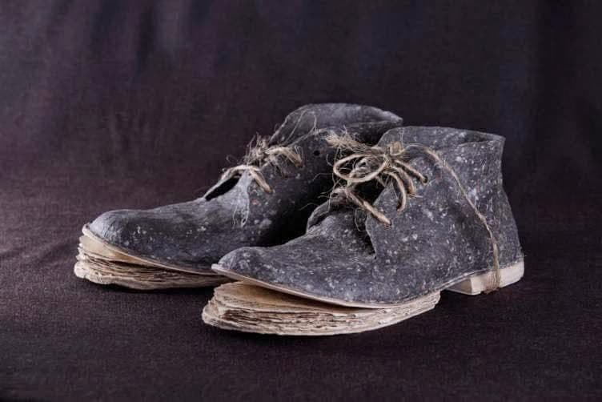
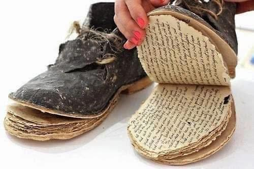
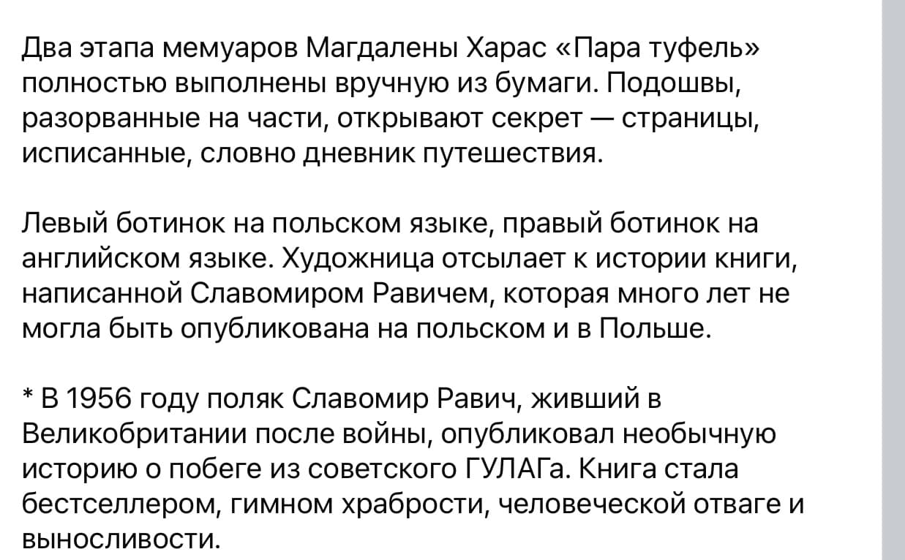
Кольцо 1824 года - Луи Антуан Французский. Считается, что это кольцо было подарено Луи Антуану Французскому (герцогу Ангулемскому 1775-1844), последнему дофину Франции, в честь победы Франции над либеральным испанским правительством в 1824 г. Центральный медальон открывается, чтобы показать миниатюрный роялистский документ, описывающий детали французской экспедиции, такие как состав армии, места сражений или имена действующих лиц, напечатанные на сложенной гармошкой бумаге.
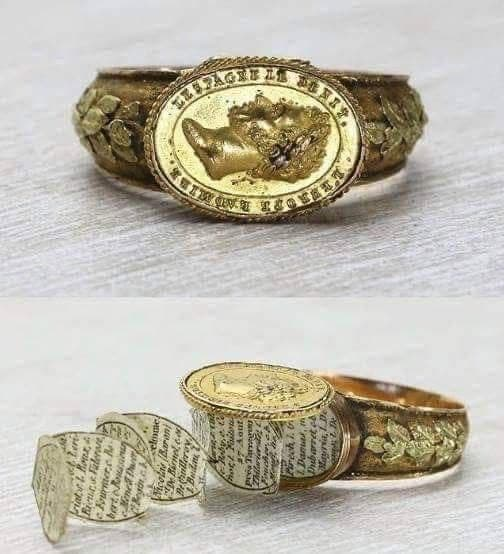
Цифровая печать открыла новые горизонты для полиграфии. Сегодня можно напечатать даже на кусочке яблока или на воздушном шаре. А технологии металлизации позволяют создавать издания, которые переливаются как драгоценные камни.
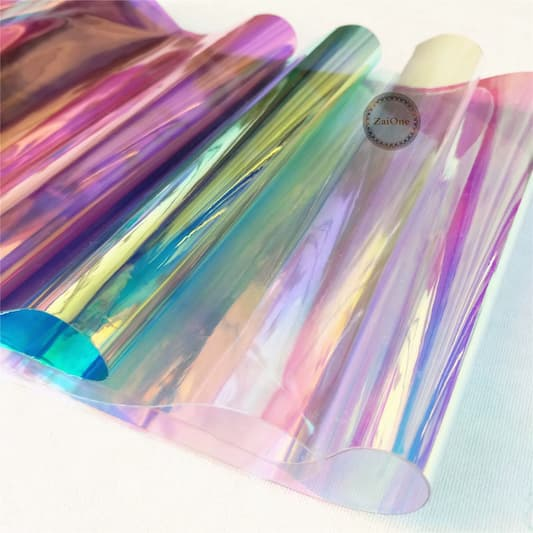
В истории полиграфии немало курьезных моментов. Однажды типография напечатала календарь, где февраль длился 31 день, а в другом случае в газете вышла статья о смерти известного политика, который на самом деле был жив.
Современная полиграфия не перестает удивлять:
Полиграфия – это не просто печать на бумаге. Это целое искусство, которое постоянно развивается и удивляет нас новыми возможностями. Каждый день появляются новые технологии и креативные решения, которые делают печатную продукцию еще более интересной и функциональной.
А знаете, почему принтер никогда не станет шеф-поваром? Потому что он постоянно делает копии, но никогда не готовит что-то новое!
Впрочем, это точно не про нас! Наши современные принтеры и печатные машины всегда готовы создавать что-то особенное и новое для каждого клиента. В ИПК «Лазурь» мы не просто следуем трендам – мы их создаем вместе с вами!